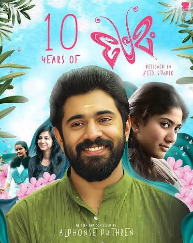
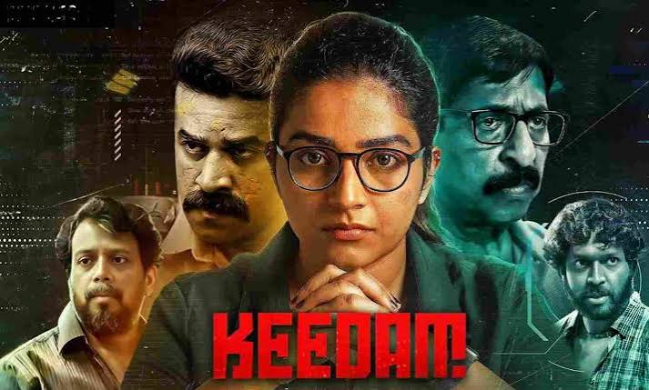

Biographical action war film
October 31, 2024
Amaran is a biographical action war film based on the life of Major Mukund Varadarajan.
The movie follows Major Mukund Varadarajan and his journey in the Indian Army. It shows his courage, dedication and sacrifice while serving the nation. The story also focuses on his relationship with his wife Indhu Rebecca Varghese and his family. The film stars Sivakarthikeyan and Sai Pallavi.

coming-of-age romantic comdey-drama
22 May 20215
Premam is a Malayalam coming-of-age romantic comedy-drama directed by Alphonse Puthren.
The story follows George through three stages of his life and his experiences with Mary, Malar and Celine. The film explores love, friendship, heartbreak and how George changes as he grows older. The movie stars Nivin Pauly, Sai Pallavi, Anupama Parameswaran and Madonna Sebastian.

Cyber Crime / Tech-Thriller / Suspense
2022
Keedam is a Malayalam crime thriller focusing on cybersecurity and cyberstalking.
The story follows Radhika Balan, a cybersecurity expert who becomes a victim of cyberstalking. After her privacy is compromised, she decides to use her knowledge and technical skills to fight against those responsible. The film stars Rajisha Vijayan and Sreenivasan.